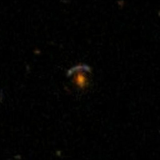
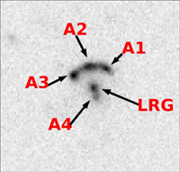
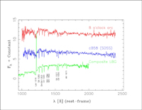

November 7, 2006
|
+ enlarge  |
|
Sahar Allam of Fermilab searched more than 70,000 SDSS-II images looking for merging pairs of galaxies. Allam recognized this as an arc of three images of the same background galaxy, gravitationally lensed by the luminous red elliptical in the foreground. (The faint blob at the lower left is a random galaxy in the field). A combination of furious star formation and gravitational amplification makes the 8 O'Clock Arc three times brighter than the brightest previously known Lyman break galaxy, another gravitationally lensed system known as cB58. (Credit - Allam, SDSS-II collaboration) |
|
+ enlarge  |
|
Allam and the team confirmed the finding using this image from the 3.5-meter telescope at Apache Point Observatory in New Mexico. The faint, fourth image of the Lyman break galaxy is visible just below the central galaxy.. (Credit - Allam, SDSS-II collaboration) |
|
+ enlarge  |
|
The spectrum of the 8 O'Clock Arc (top), measured from the Apache Point
Observatory 3.5-meter telescope, demonstrates that it is a highly redshifted, distant, Lyman break galaxy. The Arc spectrum is similar to that of cB58 (middle), but somewhat different from the average spectrum of fainter Lyman break galaxies (bottom).
(Credit - Allam, SDSS-II collaboration) |
A team from the Sloan Digital Sky Survey (SDSS-II) and Fermi National Accelerator Laboratory today announced discovery of the brightest known image of a galaxy from the early universe.
While furious star formation makes the galaxy luminous, it enters the record books because the gravity of a foreground galaxy acts as a natural telescope, focusing its light on the earth.
The newly discovered galaxy, seen as an arc of four elongated images that encircle the foreground lens, offers a rare window into the state of the universe two billion years after the big bang.
"A telescope is an astronomer's time machine," explained Fermilab researcher Huan Lin, a member of the discovery team. "The light from this galaxy took more than 11 billion years to reach us."
The team's paper, "The 8 O'clock Arc: A Serendipitous Discovery of a Lensed Lyman Break Galaxy in the SDSS Data," was submitted to the Astrophysical Journal Letters and was posted today to the astrophysics preprint server (http://arxiv.org/abs/astro-ph/0611138.
Team leader Sahar Allam of Fermilab discovered the arc serendipitously in the course of a painstaking search for merging pairs of galaxies that took her through more than 70,000 SDSS-II images. The source of these images, the 2.5-meter telescope located at Apache Point Observatory in New Mexico, has obtained high-resolution digital images of roughly half the northern sky.
Allam described the discovery: "It had been a long day, and I was getting tired, but I decided to keep going for 10 more minutes. Just as I was about to give up for the night, I found a beautiful blue arc around a luminous red elliptical galaxy."
She immediately recognized that this was not two merging galaxies but rather a gravitational lens, with the red elliptical galaxy bending the light of a much more distant background system.
"I literally yelled, 'There it is! There it is!'" Looking at the clock, Allam saw that it was precisely 8 p.m., so she named the object "The 8 O'Clock Arc."
Follow-up observations from the 3.5-meter telescope at Apache Point by Allam and Fermilab colleagues Lin, Douglas Tucker, H. Thomas Diehl and Liz Buckley-Geer, confirmed that the "arc" consists of four lensed images of a galaxy at a redshift of 2.73; this equates to a distance of 11.2 billion light years.
Theoretical modeling indicates that gravity has magnified the galaxy's light by more than a factor of 10.
While earlier surveys detected more than 1,000 of these distant, highly redshifted, "Lyman-break" galaxies (named for the way that hydrogen gas absorption alters their colors), they are generally too faint for detailed study, even with the world's largest telescopes.
The combination of rapid star formation and gravitational amplification makes the 8 O'clock Arc a factor of three brighter than the brightest previously known Lyman-break galaxy, another gravitationally lensed system called MS 1512 - cB58.
"These gravitationally magnified systems are the Rosetta Stones that allow us to understand what's going on in this population," observed Alice Shapley, a Princeton University expert on Lyman-break galaxies. (Shapley was not part of the discovery team.)
Shapley explained that high-resolution spectroscopic observations could determine the pattern of chemical elements present in the galaxy, test whether its mix of stars is similar to that of the Milky Way and, above all, reveal the mechanism behind the massive gas outflows that are ubiquitous in Lyman-break systems.
"Lyman-break galaxies like to spew out gas as fast as they pull it in. This is a unique opportunity to learn how they do it," she said.
Allam and her colleagues are excited about pursuing these and other follow-up observations of this extraordinary system.
"Lots of SDSS science emerges from the overwhelming statistics of enormous samples," said Allam. "But this is a completely different way of mining the SDSS for scientific discoveries. If you're willing to look through tens of thousands of rocks, every so often you find a jewel."